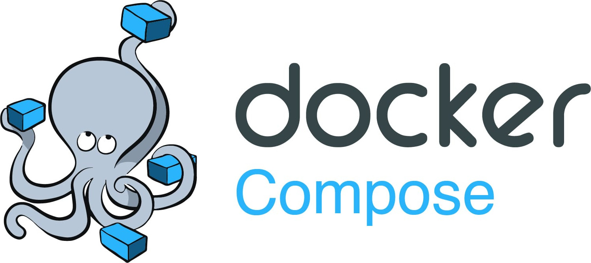
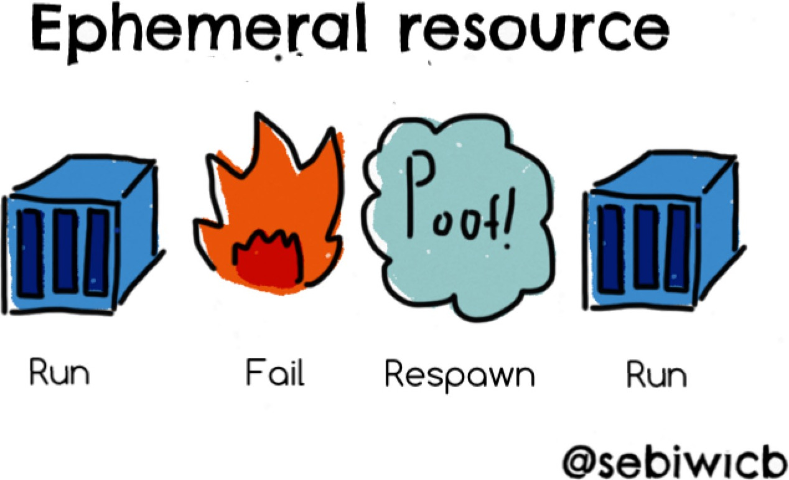
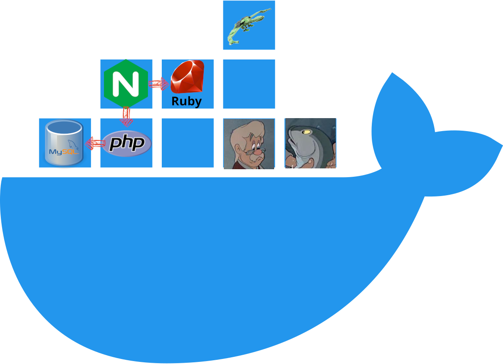
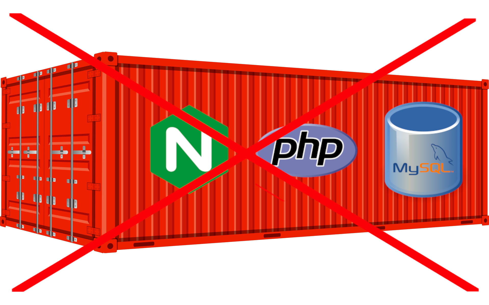
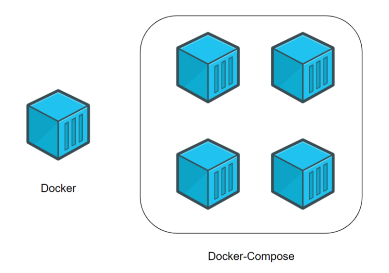
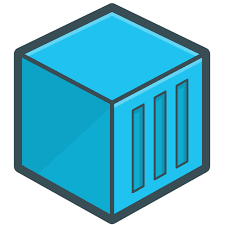

# Docker Compose Architecture & Deployment <!-- .element: class="subtitle" --> --- ## Docker Compose <!-- .element: class="hidden" --> <p></p> --- ## The Docker philosophy A container is intended to be **ephemeral**. <p></p> **Notes:** The same container may not run in perpetuity. Many replicas may be launched. New containers will replace crashed ones. --- ## Best practices for ephemerality - If the code needs revision, **update the image** and run a new container. - Pass **configuration** via environment variables or mounted configuration files. - **Mount volumes** to persist data. **Notes:** Assume a container may be destroyed and recreated at any time: - Do not update the code inside a running container. Update the image instead. - Do not bake configuration into an image. An image should not contain sensitive data. - Do not store data in the thin writable layer of a running container. Use volumes instead. --- ### Container isolation Docker containers are **isolated services**, not VM replacements. <!-- .element: class="text-3xl" --> <p class="center"> <p></p> </p> --- ### Microservice architecture <div class="flex justify-center gap-20"> <p></p> </div> **Notes:** Each container should have **only one mission**. Containers allow subdividing the functions of a system into smaller collaborating pieces. --- ### Best practices for isolation - A Docker image should **contain the bare minimum** to provide its service and run as quickly as possible. - Keep It Simple, Stupid ([KISS](https://en.wikipedia.org/wiki/KISS_principle)). Each container should handle one job and **delegate other functions** to other containers. **Notes:** - Minimize your dependencies. The simpler a Docker image is, the more reusable and portable it is. - Delegate. For example, a web application container will delegate storage to a separate database container. --- ## What is Docker Compose? <p></p> **Notes:** Docker Compose is a tool for defining and running multi-container applications, making it easy to manage **services, networks, and volumes** without having to use low-level Docker commands or write complex scripts. --- ## The compose file ```yml services: # Application service app: build: . depends_on: - db environment: DB_URL: postgres://db:5432/app ports: - '8080:80' restart: always # Database service db: image: postgres:16.1-alpine environment: POSTGRES_DB: awesome-db POSTGRES_USER: example POSTGRES_PASSWORD: changeme restart: always volumes: - 'dat:/var/lib/postgresql/data' # Persistent volumes volumes: dat: ``` <!-- .element: class="full-height-code" --> **Notes:** Docker Compose uses a single, comprehensible [YAML](https://yaml.org) configuration file called the **Compose file**. --- ### Compose services A Docker Compose **service** is an **abstract definition of a computing resource within an application**, in the form of a Docker **image** and runtime configuration. <div class="grid grid-cols-5 gap-8"> <div class="col-span-3"> ```yml app: build: . # image to build depends_on: # dependencies - db environment: # configuration DB_URL: postgres://db:5432/app ports: # port mapping - '8080:80' restart: always # restart policy ``` </div> <div class="col-span-2 flex items-center"> <p></p> </div> </div> Services are backed by one or multiple **containers**. **Notes:** Services are defined in the **Compose file**. Service containers are run by the platform according to specified requirements. All containers within a service are identically created with these arguments. Each service can be scaled independently. --- ## Why use Docker Compose? - Simple **container orchestration** - **Efficient collaboration**: compose files are easy to share - **Portability** across environments through configuration **Notes:** - Orchestrate multi-container applications in a single file, making your application environment easy to replicate. - Compose files facilitate collaboration among developers, operations teams, and other stakeholders. - Compose supports variables to customize your containers for different environments or users. [docker]: https://www.docker.com [yaml]: https://yaml.org
GitHub
Backup copy